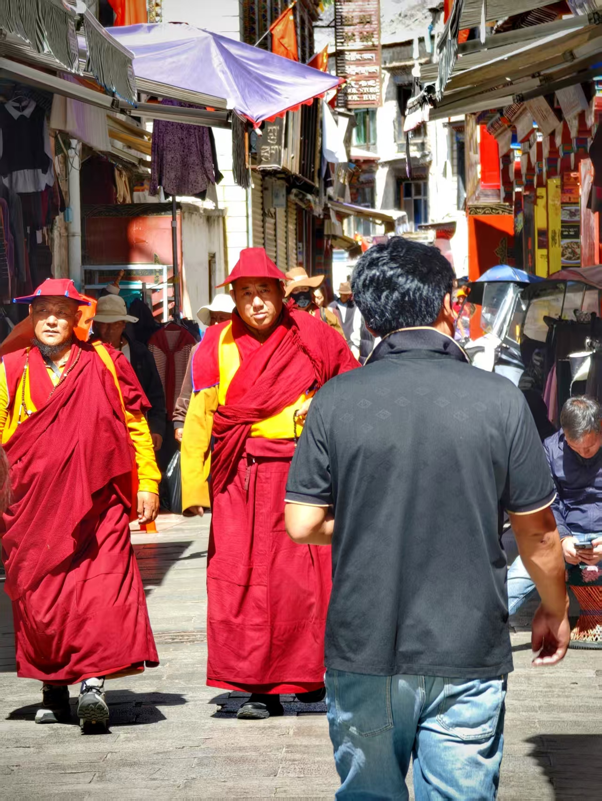
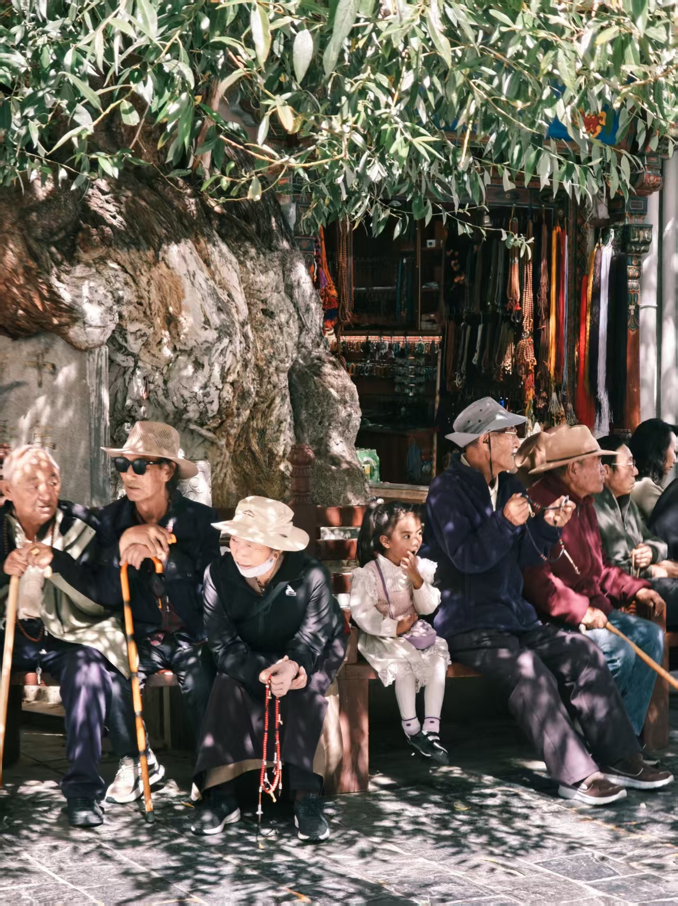
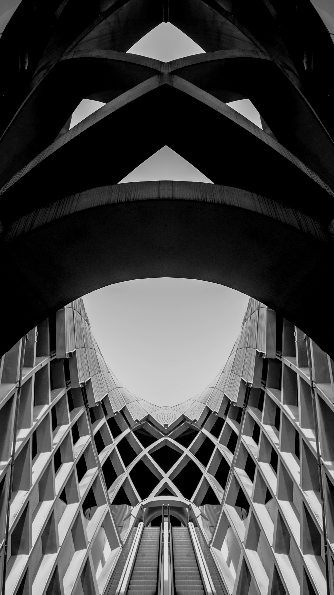
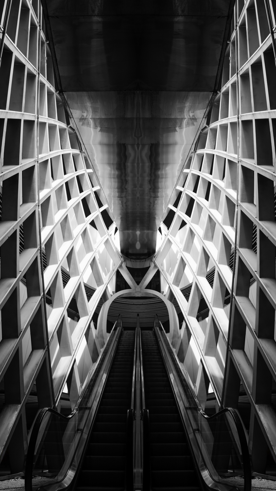
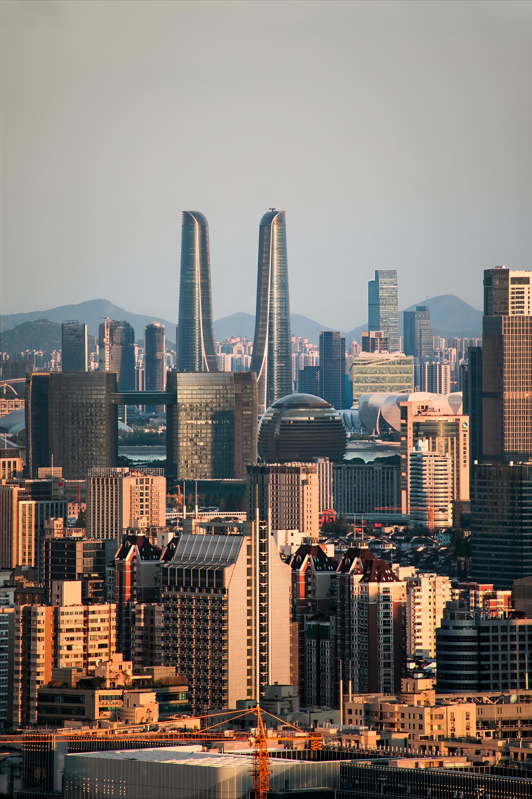
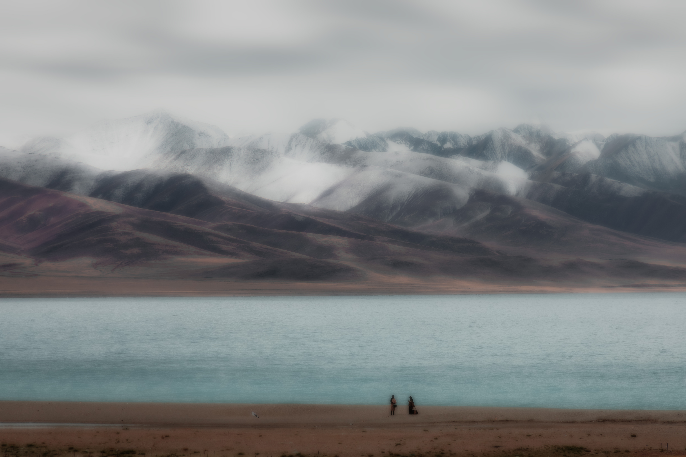
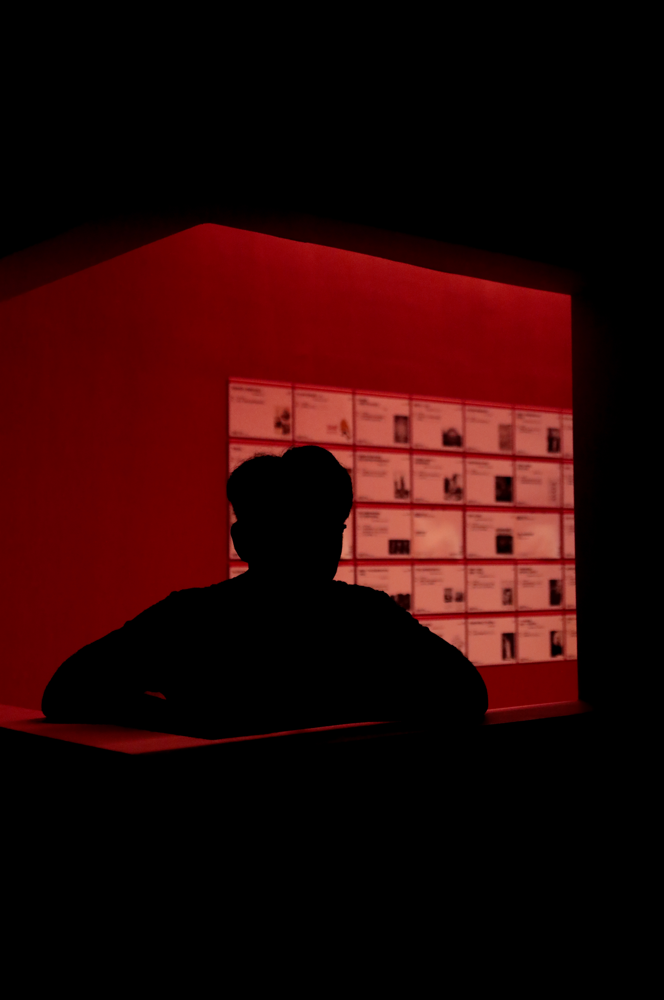
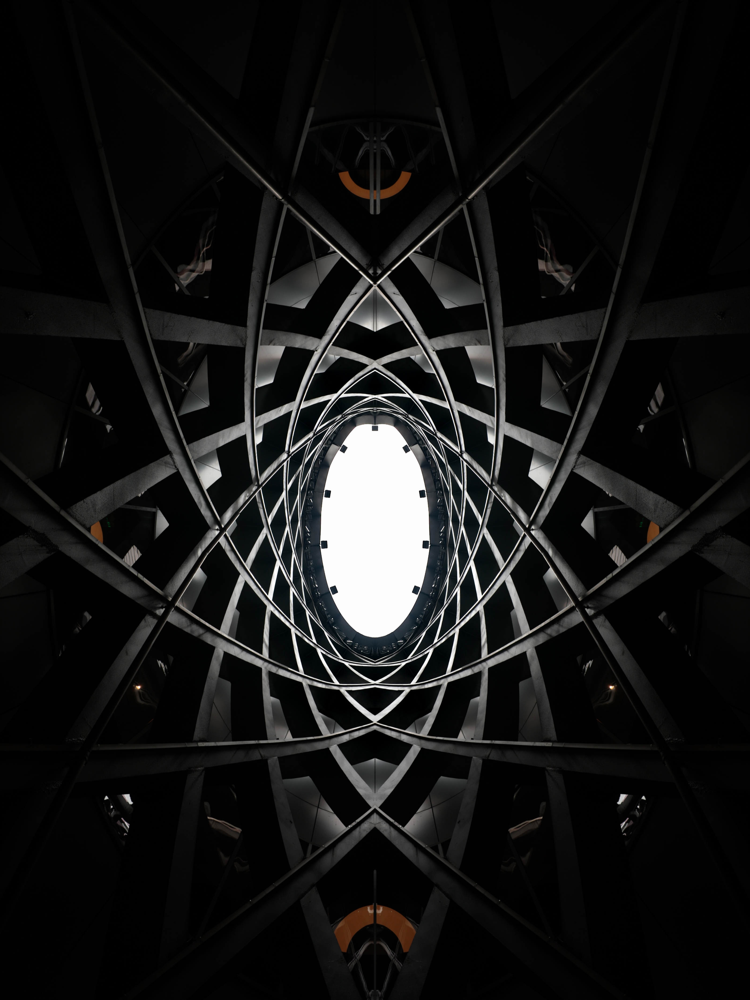
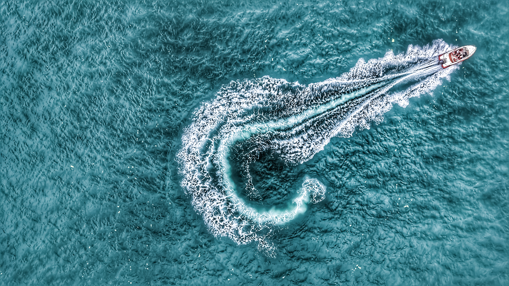
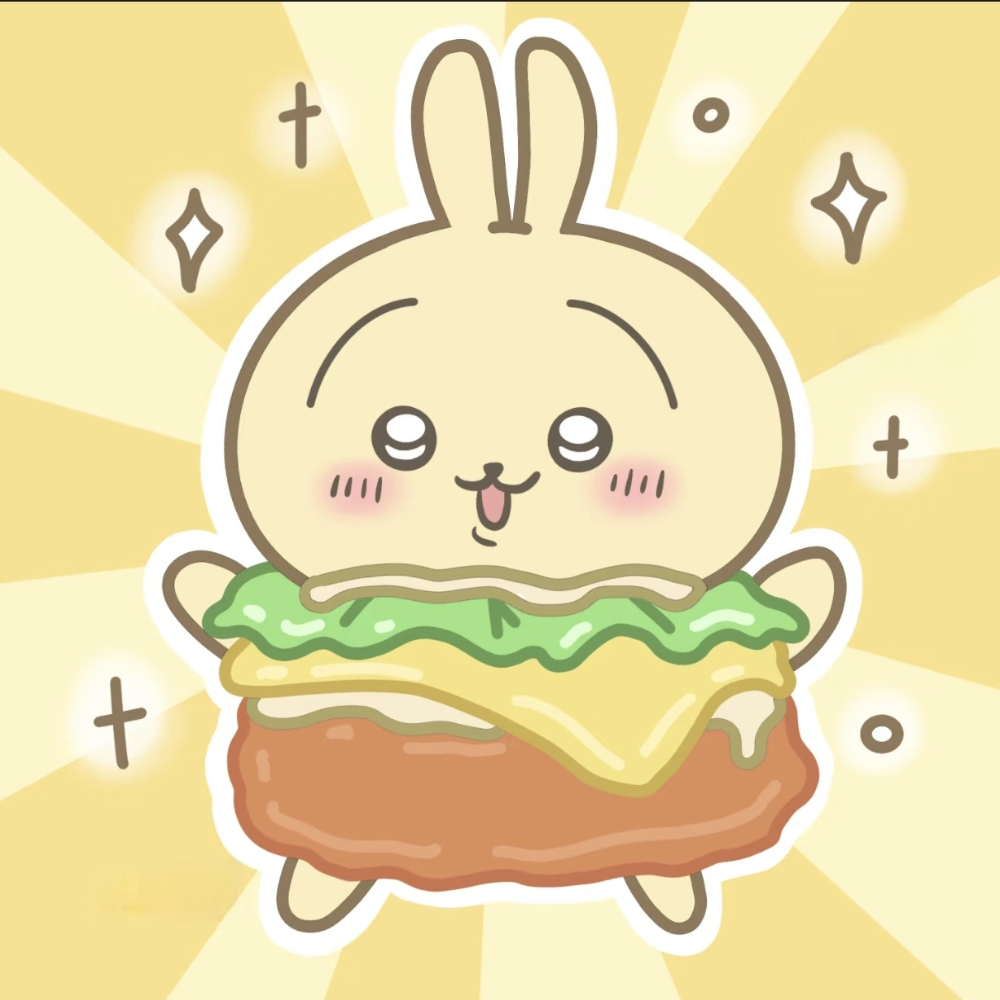

摄影作品
探索自然的美丽与多样性，每一张照片都是对大自然的致敬

藏地烟火
古巷人潮，藏韵恒流

信仰日常
僧俗共行，藏风永续

树荫下的传承
老少同檐，藏俗绵长
平安底色
警灯长明，藏区安澜
霓虹迷宫
光海如织，思越藩篱

棱线之诗
钢骨成网，思入混沌

向上之惑
梯入虚空，思破维度
窗月晤言
黄窗映月，思穿古今

双林对弈
楼林代林，思定贪婪

瓦巷棱镜
棋巷如谜，思越层叠
8848之问
峰高 8848，思越丈量

鸟
藏境叩问，小大相形

雾里观世
世如雾境，窥不破的迷局
苍穹孤翼
翼掠湖山，思越鸿蒙

意游
墨绿迷踪，意会超形

红匣迷思
影向难辨，眼见非真

禅荷虚境
荷影禅心，境幻意真

时与能
质能裂隙，时虚景朦

棱境观世
换角观世，真亦难明

潮声织网
人潮逐浪，思辨边界

日舟同途
舟行日下，思叩孤勇

浪痕成谜
艇过浪生，思破执念

渔港默片
船城共老，思溯记忆
关于辣不死的堡

别人写作文靠妙笔生花，我写作文靠 “字数凑搭”—— 作为一名挣扎在作文及格线边缘的初中生，每次面对作文本都像面对一道无解的数学题，脑袋空空如也，笔尖重若千斤。那些堵在心里说不明白的情绪、藏在眼里想分享的画面，落在作文里总显得干巴巴，完全不是我想要的样子。
直到我拿起相机，才发现原来表达情绪不止 “写作文” 这一条路。摄影于我，就像给情绪找了个靠谱的 “树洞”，不用绞尽脑汁想成语、凑段落，只要按下快门，就能把山间的风、天边的云、街巷的烟火气都定格下来。这些光影里藏着我的开心、我的好奇。
我更热爱风光摄影，总爱追着日出日落跑，对着山川湖海拍。比起写作文时的抓耳挠腮，蹲在路边等一束合适的光线、爬上山顶拍一片辽阔的风景，是我最享受的moment。